La vidéo de Pursuing AI décrypte la sortie surprise de ChatGPT 5.4 (initialement masqué sous le nom de code « Galapagos » sur LM Arena), un modèle qui redéfinit les standards de l'intelligence artificielle générative et pulvérise les benchmarks de développement. Le créateur structure sa démonstration en soumettant l'IA à des tests de résistance technique de haute volée : génération d'un globe 3D interactif avec animations dorées, modélisation d'une pièce en 3D dotée d'une transition dynamique jour/nuit sophistiquée, conception d'un outil de recadrage d'image en temps réel et simulation ultra-réaliste d'une main articulée aux mouvements biomécaniques précis.
Pour les créateurs de contenu vidéo, cette percée technologique transforme radicalement l'approche de la production visuelle et interactive. Grâce à une fenêtre de contexte colossale d'un million de tokens en entrée et de 128 000 tokens en sortie, combinée à une compréhension native des interfaces logicielles, le modèle permet de prototyper des applications web complexes et des visualisations 3D fluides en un temps record. La méthode étape par étape du créateur consiste à confronter directement les résultats de GPT-5.4 aux anciennes versions (comme GPT-5.2 Codex) et aux concurrents (comme Claude Sonnet 4.5 et Qwen 3.5), démontrant visuellement un bond en avant spectaculaire en matière de raisonnement spatial et d'exécution logicielle.
OpenAI vient de lâcher par surprise ChatGPT 5.4, ruinant complètement mes projets de week-end. Il se cachait sur LM Arena sous le nom de code Galapagos, mais à partir d'aujourd'hui, il est en ligne. Il possède une fenêtre de contexte d'un million de tokens, il pulvérise les références humaines et fait passer les anciens modèles pour du code en HTML basique.
Interface & Outils : Site web d'annonce d'OpenAI, interface de LM Arena (LMSYS), navigateur web avec Gmail et simulation interactive 3D dans le navigateur.
Contenu textuel & Code : Texte d'introduction "Introducing GPT-5.4 - Designed for professional work", nom de code "galapagos" sur LM Arena, interface de messagerie Gmail avec des actions automatisées et application web interactive nommée "Golden Gate Flight Experience".
Action / Démonstration : Présentation des notes de version de GPT-5.4, affichage du modèle sur LM Arena, démonstration de l'interaction de GPT-5.4 avec une interface de messagerie et de la navigation 3D en temps réel dans une simulation de pont.
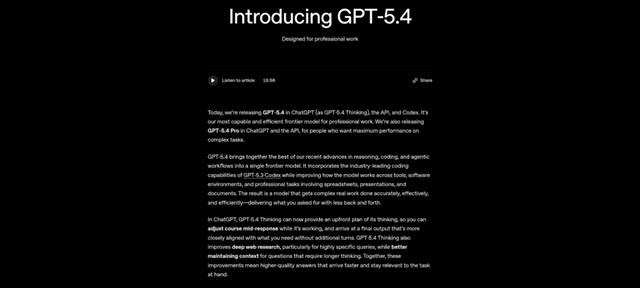
🔍 Agrandir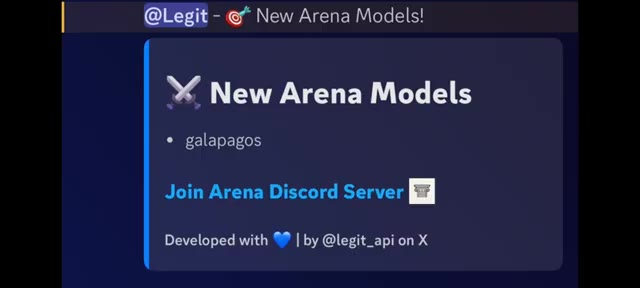
🔍 Agrandir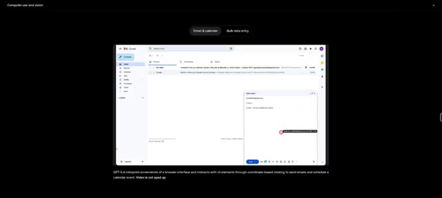
🔍 Agrandir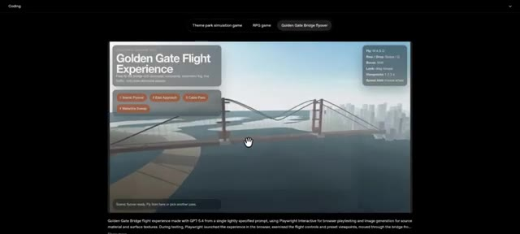
🔍 AgrandirAujourd'hui, nous testons ses capacités de développement web avec des globes 3D, des simulations de pièces interactives et des doigts articulés. C'est Pursuing AI et vous regardez le Research Report. Hier, je préparais une vidéo pour vous parler de ce mystérieux modèle Galapagos sur LM Arena, mais OpenAI a appuyé sur la gâchette un peu trop tôt.
Interface & Outils : Interface web de test et de simulation interactive intégrant des graphismes 3D en temps réel et des panneaux de contrôle textuels.
Contenu textuel & Code : Texte visible : "Golden Gate Flight Experience", boutons de sélection ("Theme park simulation game", "RPG game", "Golden Gate Bridge flyover"), contrôles de vol (Fly: W A S D, Rise / Drop: Space / Q, Boost: Shift, Look: Drag mouse, Viewports: 1 2 3 4, Speed trim: Mouse wheel) et curseurs de manipulation de doigts.
Action / Démonstration : Navigation et démonstration interactive d'une simulation 3D de survol d'un pont ainsi que de la manipulation des articulations d'une main virtuelle.
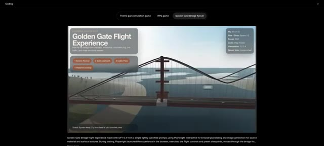
🔍 Agrandir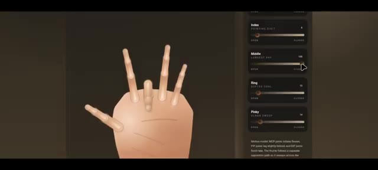
🔍 Agrandir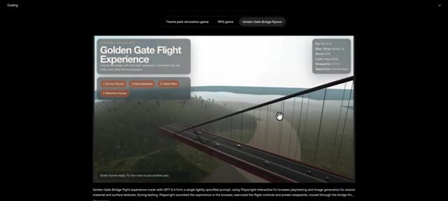
🔍 AgrandirC'est arrivé bien plus tôt que prévu, et spoiler, ses capacités de codage sont insensées. Laissez-moi vous montrer les tests de résistance que j'ai menés. Tout d'abord, regardez ce globe 3D interactif. À première vue, il est absolument saisissant. Je peux zoomer, dézoomer et faire glisser la carte du monde en douceur.
Interface & Outils : Navigateur web affichant une application web interactive de globe 3D (Atlas Terminal) et une publication sur X (Twitter)
Contenu textuel & Code : Texte affiché : '5.4 sooner than you think' (OpenAI), 'Interactive globe with living borders and signal markers.', 'Rotation', 'Highlight', 'Markers', 'Focused Marker: Osaka', 'Texture Mode', 'Geometry', 'Marker Set'
Action / Démonstration : Le créateur présente une publication sur les réseaux sociaux puis démontre un globe 3D interactif sur une page web, en explorant ses fonctionnalités et ses options de contrôle.
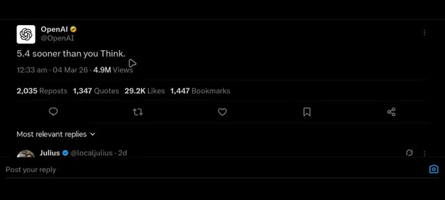
🔍 Agrandir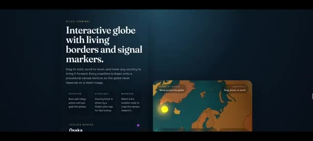
🔍 Agrandir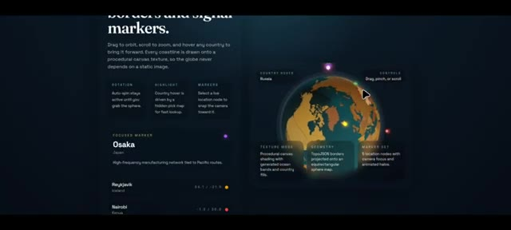
🔍 AgrandirSi je sélectionne le pays, cela déclenche cette animation dorée en survol qui a l'air incroyablement cool. Si je dois noter cette génération de GPT 5.4, c'est facilement un 9 sur 10. Pour le contexte, le globe fait par GPT 5.2 codex ne ressemble absolument à rien comparé à celui-ci.
Interface & Outils : Application web "Orbital Atlas" présentant un globe interactif procédural avec des panneaux d'information contextuels, des réglages de rotation, de texture et des marqueurs de localisation.
Contenu textuel & Code : Texte affiché : "Interactive procedural globe", "Active location: United States", "Country highlights" (avec les pays United States, Brazil, France, Egypt, South Africa, India), ainsi que divers paramètres techniques sur l'image 1 (Rotation, Highlight, Markers, Texture Mode, Geometry, Marker Set).
Action / Démonstration : Le curseur de la souris survole ou sélectionne des pays sur le globe interactif, déclenchant des animations de surbrillance dorée et des affichages d'informations textuelles.
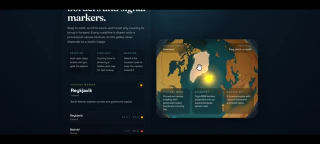
🔍 Agrandir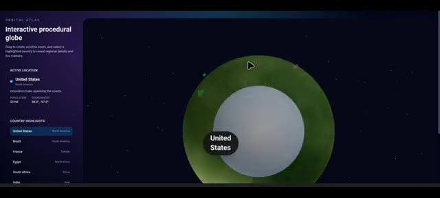
🔍 AgrandirEnsuite, nous avons cette vue de pièce en 3D. et c'est magnifique. C'est une petite scène construite à partir de géométrie de base, un lit, un bureau, une étagère, un tapis, une plante et une fenêtre. Et il y a un objet spécifique ici. Je ne sais pas exactement ce que c'est. Si vous le savez, laissez un commentaire ci-dessous.
Interface & Outils : Interface web interactive avec un panneau latéral de description et de contrôle à gauche, et une vue 3D interactive au centre.
Contenu textuel & Code : Texte affiché : "INTERIOR STUDY", "Simple 3D room with orbit exploration.", "A small scene built from basic geometry: bed, desk, shelf, rug, plant, and a window that shifts from warm daylight to lamp-lit night", "LIGHTING" avec les boutons "Day" et "Night", et "Furniture placement". Le rendu 3D montre une chambre simplifiée avec un lit, un bureau, une étagère et une fenêtre.
Action / Démonstration : Présentation d'une démo interactive de pièce 3D dans le navigateur web avec un curseur de souris visible au centre.
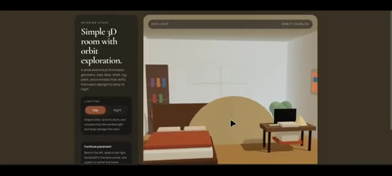
🔍 AgrandirMaintenant, c'est la vue de jour, mais voyons comment elle gère la transition nocturne. Oh mon Dieu, ça a l'air vraiment bien. Ça passe à cette vue de nuit calme, chaleureuse et éclairée par une lampe. Une lumière chaude irradie de ceci, c'est peut-être un tableau, et illumine parfaitement l'espace. Si vous comparez directement ce résultat de GPT 5.4 avec le Claude Sonnet 4.5, la différence est le jour et la nuit.
Interface & Outils : Interface web de visualisation 3D interactive ('Interior Study' / '3D Room Viewer') avec contrôles de lumière et d'orbite.
Contenu textuel & Code : Textes visibles : "Simple 3D room with orbit exploration.", "LIGHTING: Day / Night", "Furniture placement", "3D Room Viewer".
Action / Démonstration : Navigation et basculement interactif entre le mode d'éclairage diurne et nocturne dans un environnement 3D simulé.
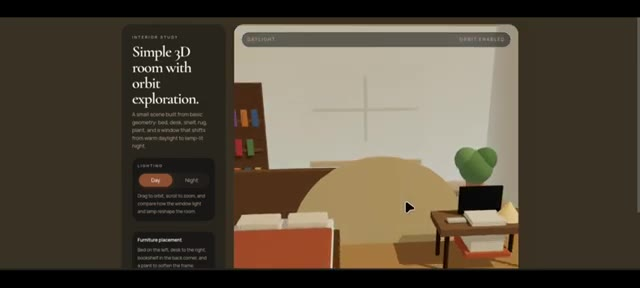
🔍 Agrandir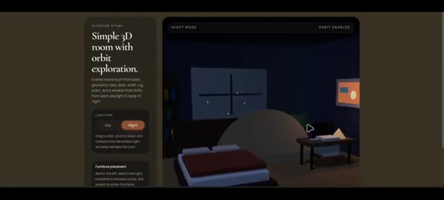
🔍 Agrandir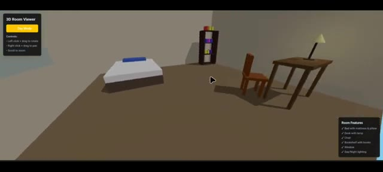
🔍 AgrandirVous pouvez facilement repérer le bond en avant en matière de raisonnement spatial. Ensuite, j'ai demandé un outil de recadrage d'image, et les résultats ont été choquants. Par défaut, une image est déjà chargée. Je peux recadrer, zoomer, dézoomer et faire pivoter. Les boutons de format d'image fonctionnent parfaitement et il y a un aperçu en temps réel de l'image recadrée juste en dessous.
Interface & Outils : Interface web interactive 'Precision Crop Studio' et '3D Room Viewer'
Contenu textuel & Code : Titres et paramètres de l'outil : 'Crop motion and geometry without leaving the frame', 'Aspect presets' (Free, 1:1, 4:5, 3:2, 16:9), 'Adjustments', 'Preview pane', 'Room Features'
Action / Démonstration : Manipulation d'un cadre de recadrage sur une image géométrique avec des curseurs de zoom et de rotation.
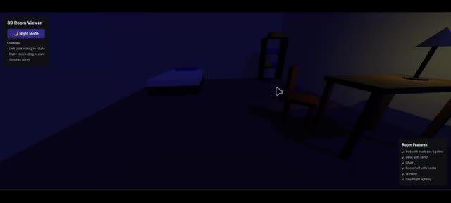
🔍 Agrandir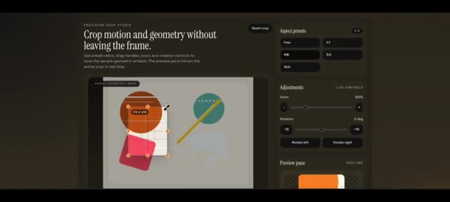
🔍 Agrandir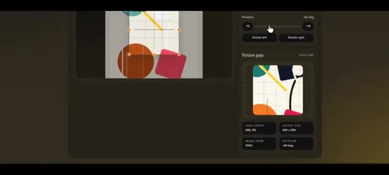
🔍 AgrandirMaintenant, ce test final est dingue. Une simulation de main interactive. Avec GPT 5.4, j'ai des curseurs de contrôle pour absolument chaque doigt. Si je plie l'index, regardez avec quel réalisme les articulations bougent. Tout fonctionne parfaitement. Pendant ce temps, la génération QN 3.5 était une perte totale de temps.
Interface & Outils : Interface de simulation interactive de main (Realistic Hand Simulation) avec un panneau de contrôle latéral comportant des curseurs pour chaque doigt.
Contenu textuel & Code : On peut lire des libellés de doigts sur les panneaux latéraux : Thumb, Index, Middle, Ring, Pinky, ainsi que des curseurs de flexion (Open / Closed).
Action / Démonstration : Le curseur de l'index est manipulé pour montrer l'articulation et la flexion réaliste des doigts de la main simulée.
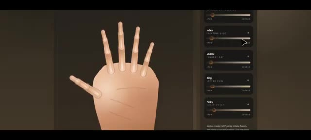
🔍 Agrandir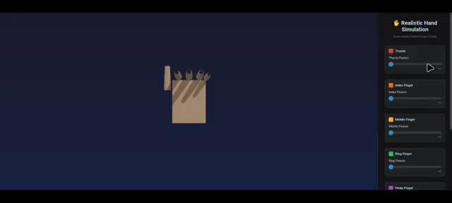
🔍 Agrandircomplètement cassé. Très bien, voici les spécifications principales que vous devez connaître sur GPT-5.4. Numéro un, il comprend les captures d'écran et interagit directement avec les interfaces logicielles, ce qui en fait une bête pour créer des agents IA capables de réellement manipuler vos applications et sites web. Numéro deux, il prend en charge une fenêtre de contexte massive, environ 1 million de jetons d'entrée et jusqu'à 128 000 jetons de sortie. Vous pouvez lui fournir des bases de code entières ou des documents massifs dans une seule invite.
Interface & Outils : Interface de documentation web d'OpenAI et interface de démonstration d'utilisation d'ordinateur (navigateur avec Gmail).
Contenu textuel & Code : Texte de présentation de GPT-5.4, interface Gmail avec curseur interactif, et spécifications techniques sur la fenêtre de contexte de 1 million de tokens (`model_context_window`).
Action / Démonstration : Présentation des notes de version de GPT-5.4, démonstration d'interaction logicielle et affichage des détails techniques sur la gestion des tokens et de la tarification.
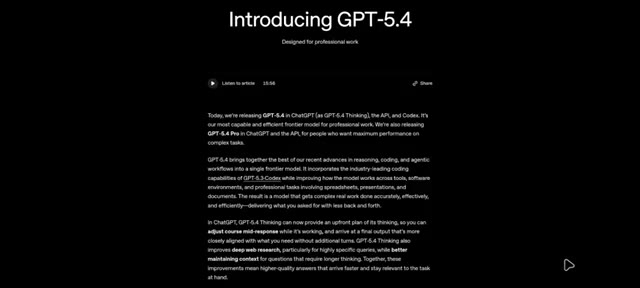
🔍 Agrandir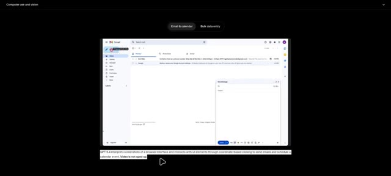
🔍 Agrandir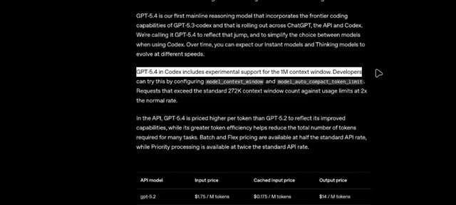
🔍 AgrandirMais voici la partie la plus folle. Dans le benchmark OS World Verified, GPT 5.2 a obtenu un score de 47,3 %. La référence humaine est de 72,4 %. GPT 5.4 atteint un taux de réussite de 75 %. Laissez-moi vous répéter ça. GPT 5.4 dépasse réellement la référence humaine dans ce test.
Interface & Outils : Documentation officielle ou rapport technique d'évaluation de modèle d'IA affichant du texte descriptif et des tableaux de benchmarks sur fond noir.
Contenu textuel & Code : Texte sur OSWorld-Verified indiquant le taux de réussite de 75,0 % pour GPT-5.4, 47,3 % pour GPT-5.2 et 72,4 % pour le niveau humain. Tableau comparatif avec les colonnes GPT-5.4, GPT-5.3-Codex et GPT-5.2 affichant les scores respectifs (ex: OSWorld-Verified : 75,0 %, 74,0%*, 47,3 %).
Action / Démonstration : Défilement de la page de documentation textuelle et du tableau de comparaison des performances des différents modèles d'intelligence artificielle.
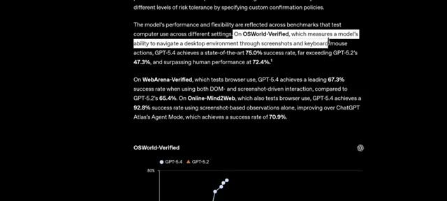
🔍 Agrandir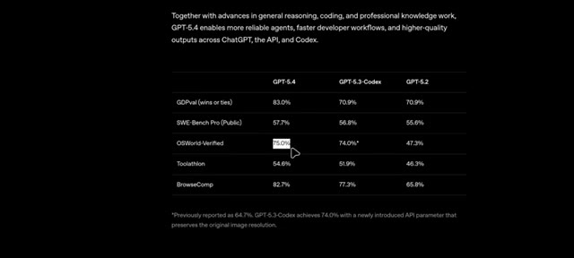
🔍 AgrandirIl est fortement positionné pour les développeurs et l'utilisation en entreprise, en particulier pour la planification avancée, le codage et l'automatisation en plusieurs étapes. Je dois donc vous poser la question : croyez-vous que ChatGPT remplacera les humains ? Et aimez-vous réellement utiliser ces nouveaux modèles, ou cela devient-il trop écrasant ? Dites-le-moi dans les commentaires.
Interface & Outils : Présentation de benchmarks de modèles d'IA sur fond sombre.
Contenu textuel & Code : Texte descriptif en haut : "Together with advances in general reasoning, coding, and professional knowledge work, GPT-5.4 enables more reliable agents, faster developer workflows, and higher-quality outputs across ChatGPT, the API, and Codex." Tableau comparant GPT-5.4, GPT-5.3-Codex et GPT-5.2 sur des critères tels que GDPval (83.0% / 70.9% / 70.9%), SWE-Bench Pro (57.7% / 56.8% / 55.6%), OSWorld-Verified (75.0% / 74.0%* / 47.3%), Toolathlon (54.6% / 51.9% / 46.3%) et BrowseComp (82.7% / 77.3% / 65.8%). Note de bas de page concernant GPT-5.3-Codex.
Action / Démonstration : Affichage des résultats de performance comparative des modèles GPT avec un curseur de souris pointant sur "OSWorld-Verified".
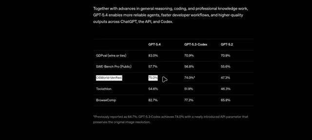
🔍 AgrandirMerci d'avoir regardé, et je vous retrouve dans la prochaine.
Interface & Outils : Présentation graphique de fin de vidéo sans partage d'écran (logo de la chaîne Pursuing AI avec un cerveau connecté à une puce).
Contenu textuel & Code : Affichage d'une illustration générée par IA représentant un cerveau humain relié par des câbles à une puce électronique portant l'inscription "PAI" (Pursuing AI), le tout encerclé par un anneau lumineux bleu sur fond noir.
Action / Démonstration : Affichage de l'écran de fin de la vidéo avec le logo de la chaîne.